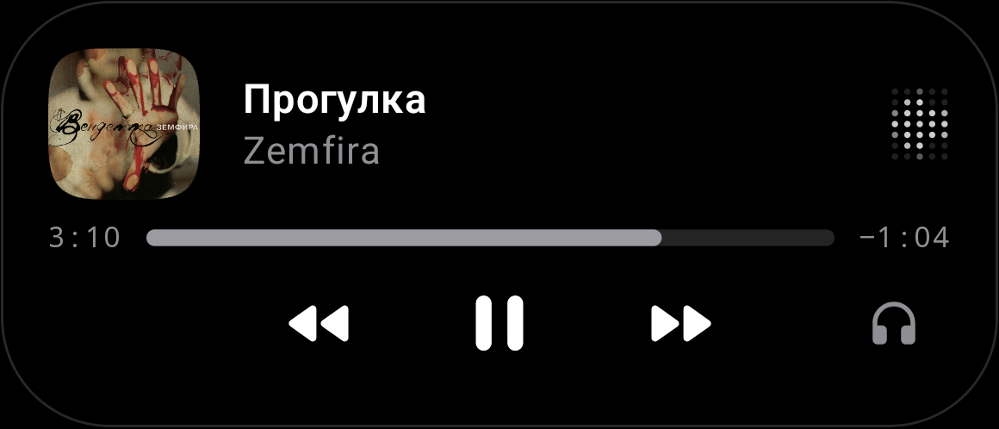
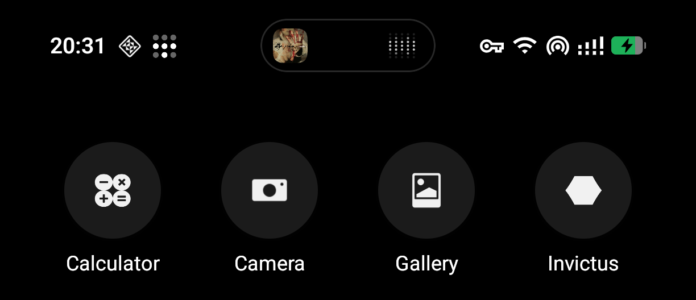
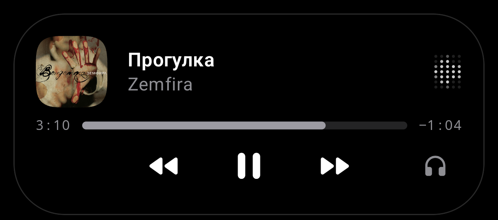

Dot Island for Android
A little more.
Right up top.

Your music and approved live updates,
around your Android camera.
From a glance to a little more.
Same place.
Just enough space.


Album artwork and the dot matrix. Your song, at a glance.
Real screenshots. Hold the island to compare; release to return.
These are captured states, not a recording of the animation.
Keep the song close.
Keep your screen yours.
Tap opens your music app. Hold brings up playback, progress and audio output. Release, and the controls tuck away.
And when there’s nothing to show.
Practically
nothing.
Just a thin ring around the camera.
Tap it for a small hello.
Tap to say hello.
Much ado
about a dot.
A very small app.
A completely disproportionate launch film.
The film could not load. You can also open marketing/site/assets/launch.mp4 directly.
Film description
“Much ado about a dot.” A close-up of the real camera-fitting idle state. “A little room for your music”: the actual compact music capture. “Your screen is still yours”: the captured phone home screen. “Hold for a little more”: a crossfade to the real expanded panel, then back to compact. “Built for one phone”: the idle state and its tap reveal. The end card reads “Dot Island. Much ado about a dot. Inspect the source: github.com/qarasky/dot-island.” Original electronic sound, without speech. Editing transitions are not recordings of app motion.
The entire target market.
One phone.
A lot of love.
Built for one A069. Dressed up for the whole internet.
Dot Island is a personal Android app, not a public release. The code is open if you’d like a closer look.
Take a closer lookBefore you get attached
One tested phone. A069, Android 16. Other devices aren’t promised; there’s no public download or checkout.
Explicit access. Accessibility attaches the overlay; notification access supplies supported activity and media state. Ordinary notifications stay untouched.
Updates from the source. Generic Live Updates need source approval. Dodo is supported by default. Status and ETA are never invented.
About the images. Music captures come from the repository; the smaller idle ring and reveal come from the later phone verification. They are lossless crops, not redrawn UI. Fresh unified captures are still needed for a public release.